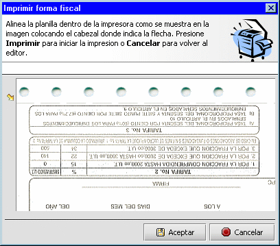
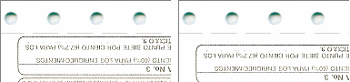

Alineando la planilla
Cuando ya se encuentre listo para Imprimir la declaración. Presione Imprimir y aparecerá una ventana como la que sigue

Esta imagen presenta la forma como debe colocar la planilla dentro de la impresora. En el ejemplo, se desea imprimir la parte posterior (reverso) de la declaración de persona jurídica (DP-J)
La flecha indica que la parte superior del cabezal de impresión debe coincidir con el predicado de la planilla. Y el lado izquierdo no debe contener ningún margen.
Presione Imprimir para comenzar la impresión. De vuelta a la forma usando Hojear y repita el procedimiento para imprimir el anverso de la planilla.
Nota
Puede comenzar imprimiendo por cualquiera de los lados, anverso o reverso indistintamente.
Al momento de imprimir debe tener presente:
- La impresora seleccionada debe indicar alguno de los tamaños de papel estándar. (carta, oficio Etc.) con orientación Portrait. Esto es porque algunas combinaciones de sistema operativo / impresora solo aceptan lo indicado en el panel de control de impresión. Asegúrese de que estos valores estén establecidos antes de comenzar la edición de la forma.
- El tamaño del fuente: Aunque es perfectamente visible en su monitor, la resolución de las impresoras de matriz de puntos es 75% la de su monitor. Si el fuente seleccionado no es legible una ves impresa la planilla, cámbielo en las preferencias.
- Debido a que cada planilla no es exactamente igual a otra en lo que respecta a las dimensiones de la hoja o la posición de la parte impresa (líneas, letras etc) sobre la hoja, como se muestra a continuación.

Cuando este alineando la planilla, debe tomar en cuenta este desplazamiento, subiendo o bajando la hoja para tratar de compensar la diferencia. Para ello, tome en cuenta la distancia entre la flecha y la parte impresa y coloque el cabezal mas o menos a la misma distancia.
Es recomendable que las primeras impresiones que realice con la aplicación, las haga sobre una hoja en blanco. De esta forma se familiarizara con el proceso de impresión.
Ver
Preferencias